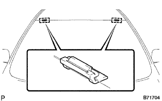
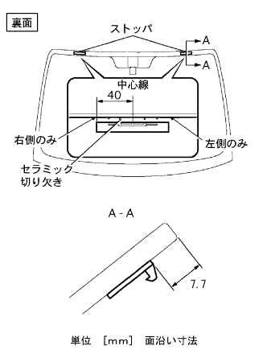
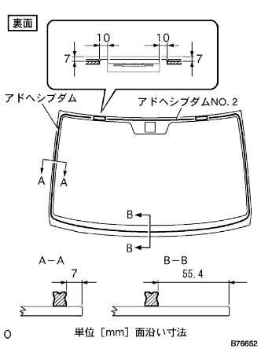
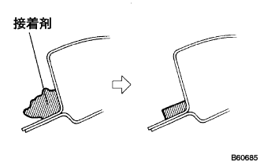
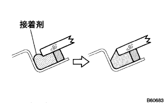

ウインドシールド ガラス 取り付け |
| 1. ウインドシールド ガラス清掃 |
破損したストッパを取りはずす。(ガラス再使用時)
 |
スクレーパーなどを使用して、残った接着剤およびアドヘシブダムを削り取る。(ガラス再使用時)
ガラス外周を白ガソリンで清掃する。
| 2. ウインドシールドガラス ストッパ NO.1取り付け |
|  |
ボデー側にウインドシールドガラスストツパを取り付ける。
| 3. ウインドシールドガラス ストッパ NO.2取り付け |
ウインドシールドガラスストッパNo.2取り付け部に専用プライマーを塗布する。
|  |
ガラス側のセラミック切り欠きとウインドシールドガラスストッパNo.2を合わせて取り付ける。
| 4. ウインドウガラスアドヒーシブ ダム取り付け |
アドヘシブダム取り付け部に専用プライマーを塗布する。
|  |
図の位置にウインドシールドガラスアドヘシブダムを取り付ける。
| 5. ウインドウガラスアドヒーシブ ダム NO.2取り付け |
| 6. ウインドシールド ガラス取り付け |
ボデー取り付け面清掃
|  |
車両側の接着剤が著しく凹凸のある場合は、ナイフで平滑にする。
ガラス取り付け前作業
吸引ゴムをガラスに張り付ける。
ガラスをボデーに乗せ、ガラス上部およびサイド部の幅が均一（ボデーとガラス端部のすき間を均一）になる位置にセットする。
アウトサイドモールデイングを取り付けるのに支障がないことを確認する。
ガラスおよびボデーパネル部にガムテープを貼り、ペンで取り付け時の合わせマークを取り付ける(新品時)
ガラスを取りはずす。
車両側のボデー面が露出している(接着剤が残っていない)部分に専用プライマーを塗布する。
ガラスの接着部に専用プライマーを図のように塗布する。
シーラントガンに接着剤をセットする。
接着剤をアドヘシブダムに沿って図のようにビード状に塗布する。
ガラス取り付け
吸引ゴムを使用し、合わせマークを一致させてガラスを取り付ける。
ガラス前面を軽く押して、完全に密着させる。
|  |
接着剤のはみ出しおよび不足をヘラで修正する。
| 7. ウィンドシールド アウトサイドモールディング取り付け |
接着剤が硬化する前にガラス位置決めドット(左上辺コーナー部)と、アウトサイドモールデイング組み付け基準ペイント(左上辺コーナー部)を合わせ、新品のウインドシールドアウトサイドモールデイングを取り付ける。
接着剤が硬化するまで保護テープでアウトサイドモールディングとガラスを押さえておく。
余分な接着剤は、硬化する前に取り除く。
| 8. 水漏れ点検および補修 |
接着硬化後、車両外側から水をかけ、室内に水漏れのないことを確認する。
水漏れが生じた場合は、乾燥させた後スリーセメントブラックを充てんする。
| 9. インナリヤビューミラーASSY取り付け |
| 10. ルーフ ヘッドライニングASSY取り付け |
| 11. バイザ ホルダ取り付け |
バイザホルダのブラケットを回転させ、ツメを起こしバイザホルダ2個を取り付ける。
| 12. バイザASSY RH取り付け |
スクリュー2本でバイザを取り付ける。
| 13. バイザASSY LH取り付け |
スクリュー2本でバイザを取り付ける。
| 14. アシストグリップASSY取り付け（FR LH） |
ツメをかん合させてアシストグリップを取り付ける。
ツメをかん合させてアシストグリップカバー2個を取り付ける。
| 15. マップ ランプASSY取り付け |
コネクタを接続する。
ツメをかん合させてマツプランプASSYを取り付ける。
スクリュー2本を取り付ける。
ツメをかん合させてレンズを取り付ける。
| 16. フロントピラー ガーニッシュ RH取り付け |
 |
ガーニッシュ下部のツメを先に入れる。
全てのクリップをかん合させ、フロントピラーガーニッシュRHを取り付ける。
| 17. フロントピラー ガーニッシュ LWR RH取り付け |
 |
ツメをかん合させ、フロントピラーガーニッシュLWR RHを取り付ける。
| 18. フロントドア オープニングトリム ウェザストリップ RH取り付け |
 |
ウェザストリップのペイントマーク(白色、どちらか1箇所)を合わせ、フロントドアオープニングトリムウエザストリツプRHを取り付ける。
| 19. フロントピラー ガーニッシュ LH取り付け |
 |
ガーニッシュ下部のツメを先に入れる。
全てのクリップをかん合させ、フロントピラーガーニッシュLHを取り付ける。
| 20. ピラーNO.1 ガーニッシュ LH取り付け |
ツメをかん合させピラーNo.1ガーニツシユを取り付ける。
| 21. リヤドア オープニングトリム ウェザストリップ LH取り付け |
ウェザストリップのペイントマーク(黄色および白色、どれか1箇所)とボデー側のウエザストリッツプ取り付け用切り欠き部(矢印部分)を合わせ、リヤドアオープニングトリムウエザストリップLHを取り付ける。

| 22. カウルトップベンチレータ ルーバ LH取り付け |
 |
クリップとツメ8個をかん合させ、カウルトップベンチレータルーバLHを取り付ける。
| 23. カウルトップベンチレータ ルーバ RH取り付け |
 |
クリップ2個とツメ7箇所をかん合させ、カウルトップベンチレータルーバRHを取り付ける。
| 24. フード トゥー カウルトップ シール取り付け |
 |
クリップ6個をかん合させ、ボンネット(フ-ド)ツウカウルトップシールを取り付ける。
| 25. フロントワイパアームRH取り付け |
 |
ワイパピボットセレーション部をワイヤブラシで清掃する。
ワイパアームセレーション部を丸やすり等で清掃する。(再組付け時)
 |
図の位置にフロントワイパブレードがくるようにフロントワイパアームRHをナットで取り付ける。
| 26. フロントワイパアームLH取り付け |
ワイパピボットセレーション部をワイヤブラシで清掃する。
ワイパアームセレーション部を丸やすり等で清掃する。(再組付け時)
 |
図の位置にフロントワイパブレードがくるようにフロントワイパアームLHをナットで取り付ける。
水またはウォッシャ液をガラスにかけながらフロントワイパを作動させ、ブレードの払拭状態およびボデーと干渉しないことを確認する。
| 27. ウインドシールド ワイパ アーム カバー取り付け |